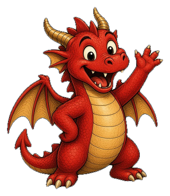

NovoLançamento
Frans WhatsApp
App de WhatsApp para atendimento em equipe. Nova prévia 0.1.0-previa.2: conexão do WhatsApp por QR code, caixa de entrada em tempo real e conversas de texto.
Apps Frans,
prontos pra rodar.
Instale no seu computador. Sem servidor, sem túnel.

Escolha seu app
Baixe para o seu sistema.
Frans Editor
Editor de vídeo com timeline, legendas automáticas e exportação em MP4.
Estamos evoluindo bastante o Editor. Em breve ele volta para download.
Frans Orquestrador
Monte times de agentes num canvas, ligue terminais e acompanhe tudo.
Versão 0.4.4Instalador sem assinatura de código: veja o aviso e o que fazer na primeira abertura.
Frans WhatsApp
App de WhatsApp para atendimento em equipe. O administrador conecta o número por QR code e a equipe atende pela mesma caixa de entrada.
O que tem nesta prévia: login, conexão do WhatsApp por QR code (só administrador), caixa de entrada que se atualiza em tempo real e conversas só de texto. Contatos, respostas rápidas e mídia (imagens, áudios e arquivos) ficam para a próxima prévia.
Sem assinatura de código. Por isso o SmartScreen do Windows mostra um aviso na primeira abertura. Isso é esperado.
- Na tela “Windows protegeu seu PC”, clique em Mais informações e depois em Executar assim mesmo.
- Baixe sempre desta página e não de outro lugar.
Windows · instalador (.exe)
Baixar instalador (.exe)Não testado em Mac. Feito para Mac com processador Intel. Se o macOS bloquear, clique com o botão direito no app e escolha Abrir, ou rode xattr -cr "/Applications/Frans WhatsApp.app" no Terminal.
Atenção, Mac: leia antes de baixar.
- Só Intel (x64). Não há versão nativa para chip Apple (M1, M2…). Nesses Macs o app roda pelo Rosetta 2; se o Rosetta não estiver instalado, o macOS oferece instalar na primeira abertura.
- Sem assinatura e sem notarização da Apple. Não há conta Apple Developer, então o Gatekeeper pergunta antes de abrir. Isso é esperado.
- Como seguir: descompacte o .zip e arraste o Frans WhatsApp para Aplicativos.
- No macOS 15 ou mais novo: abra o app uma vez, vá em Ajustes do Sistema › Privacidade e Segurança, role até a mensagem sobre o Frans WhatsApp e clique em Abrir mesmo assim.
- No macOS 14 ou anterior: clique com o botão direito no app (ou Control + clique) e escolha Abrir.
- Se aparecer “o app está danificado”: abra o Terminal e rode
xattr -cr "/Applications/Frans WhatsApp.app". Depois abra o app de novo. - Atualização: no Mac, o app não se atualiza sozinho. Quando sair uma versão nova, baixe de novo nesta página.
macOS · Intel x64 (.zip)
Baixar Intel x64 (.zip)Aviso: Este app usa uma conexão não oficial com o WhatsApp. O uso intenso pode levar ao bloqueio do número; recomendamos começar com poucas mensagens.
Tamanhos em MB de 1.048.576 bytes (1024 × 1024), com o valor exato em bytes ao lado. O sha512 protege contra corrupção do arquivo, não contra comprometimento do repositório. Baixe sempre desta página.
Novidades
O que mudou nos apps desta página.
Novo
Frans WhatsApp · prévia 0.1.0-previa.2
Conexão do WhatsApp por QR code, caixa de entrada em tempo real e conversas de texto. Instalador (.exe) para Windows, que avisa quando sai versão nova, e .zip para Mac Intel (x64), ainda não testado em Mac.
Atualização
Frans Orquestrador 0.4.4
Atualização de segurança e acessibilidade, com downloads para Mac (chip Apple e Intel), Windows, Ubuntu/Debian e Linux (AppImage). O instalador não tem assinatura de código.
Em desenvolvimento
Frans Editor
Estamos evoluindo bastante o Editor. Em breve ele volta para download.
Instalador sem assinatura de código nesta versão
O instalador da 0.4.4 não tem assinatura de código. Por isso o seu sistema vai mostrar um aviso na primeira abertura. Isso é esperado.
A prévia do Frans WhatsApp (0.1.0-previa.2) também não tem assinatura: no Windows, o SmartScreen pode avisar na primeira abertura, e no Mac o Gatekeeper bloqueia a primeira abertura.
Veja como seguir no card do Frans WhatsApp
A atualização automática ainda não verifica quem assinou o instalador. Baixe sempre desta página e não de outro lugar.
Windows
Na tela “Windows protegeu seu PC”, clique em Mais informações e depois em Executar assim mesmo.
Mac
Não há conta Apple Developer, então o Gatekeeper pergunta antes de abrir. No macOS 15 ou mais novo, abra o app uma vez, vá em Ajustes do Sistema › Privacidade e Segurança, role até a mensagem sobre o Frans e clique em Abrir mesmo assim. Em macOS mais antigo, também funciona clicar com o botão direito no app e escolher Abrir.
Linux (AppImage)
Dê permissão de execução com chmod +x frans-*.AppImage e abra o arquivo. Veja o passo a passo completo em Primeira abertura.
Já tem instalado? Baixe e instale por cima
- Baixe o instalador da 0.4.4 para o seu sistema, nos botões acima.
- Execute por cima da versão atual.
- Depois de atualizar, abra terminais novos.
- Cadastre suas chaves de API apenas pelo formulário de Configurações do app; nunca cole em terminais ou chats.
- Instala em um passoBaixe, abra e pronto. Sem servidor, sem túnel.
- Versão estávelOs downloads apontam para a versão estável atual.
- Frans te guiaPasso a passo ilustrado para a primeira abertura em cada sistema.
Primeira vez abrindo? Veja o passo a passo da primeira abertura.
Primeira abertura
O instalador do Frans não tem assinatura de código, por isso o sistema pergunta uma vez antes de abrir. Depois dessa primeira vez, normalmente não pergunta de novo. Escolha o seu sistema:
Windows
Vale para o Frans Orquestrador.
- Abra o .exe baixado. Se aparecer “Windows protegeu seu PC”, clique em Mais informações.
- Depois clique em Executar assim mesmo.
Se a tela não aparecer e o Windows só bloquear a abertura
- Clique com o botão direito no .exe baixado e escolha Propriedades.
- Marque Desbloquear e clique em OK.
- Abra o app de novo.
Normalmente o Windows só pergunta na primeira abertura.
Mac
Vale para o Frans Orquestrador.
- Abra o .dmg e arraste o app para Aplicativos.
- Abra o app uma vez. O Mac vai avisar que não pode verificar o desenvolvedor.
- No macOS 15 ou mais novo, vá em Ajustes do Sistema › Privacidade e Segurança, role até a mensagem sobre o Frans e clique em Abrir mesmo assim.
- Em macOS mais antigo, também funciona clicar com o botão direito no app e escolher Abrir.
Alternativa pelo Terminal
Só se o caminho acima não funcionar. Este comando serve apenas para o app do Frans; não use em outros apps. As aspas são necessárias por causa do espaço no nome.
xattr -dr com.apple.quarantine "/Applications/Frans Orquestrador.app"
Linux
O .deb é a opção principal, no Ubuntu e no Debian.
sudo apt install ./frans-*.deb
O .deb já cuida do sandbox sozinho, sem ajuste extra.
AppImage
1. O AppImage precisa do FUSE 2. O pacote muda conforme a versão.
Ubuntu 24.04 e Debian 13:
sudo apt install libfuse2t64
Ubuntu 22.04:
sudo apt install libfuse2
2. Dê permissão de execução:
chmod +x frans-*.AppImage
3. Abra com dois cliques ou pelo terminal:
./frans-*.AppImage